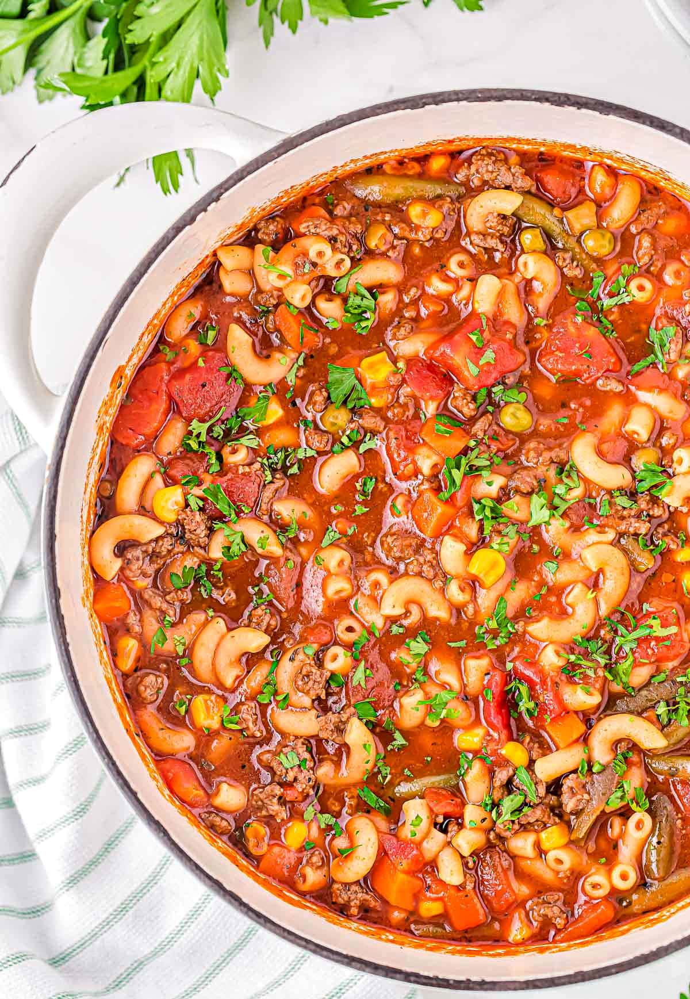

Macaroni Stew

Description
Macaroni stew is a hearty and comforting dish made with macaroni pasta, typically elbow-shaped, cooked in a
flavorful and often tomato-based broth or sauce. It often includes a variety of ingredients such as ground meat
(such as beef or pork), vegetables (like onions, carrots, and peas), and seasonings (such as garlic, herbs, and
spices).
Macaroni stew is known for its savory, slightly sweet, and well-balanced taste. It's a popular comfort
food in many cultures and can be customized with additional ingredients to suit individual preferences. It's a
filling and satisfying meal, perfect for a cozy dinner on a chilly day.
Ingredients:
- Macaroni pasta (elbow macaroni or a similar shape)
- Ground meat (e.g., beef, pork, or a combination)
- Onion, finely chopped
- Garlic, minced
- Tomato sauce or diced tomatoes
- Chicken or beef broth (or water)
- Carrots, diced
- Peas (fresh or frozen)
- Bell peppers, diced (optional)
- Olive oil or cooking oil
- Salt and pepper, to taste
- Italian seasoning or dried herbs (e.g., oregano, basil)
- Grated Parmesan cheese (for garnish, optional)
Steps:
- Cook the Macaroni: In a large pot, bring water to a boil and cook the macaroni pasta according to the package instructions until it's al dente. Drain and set aside.
- Brown the Ground Meat: In a separate large pot or Dutch oven, heat some olive oil over medium heat. Add the chopped onion and garlic and sauté until they become translucent and fragrant.
- Add the Ground Meat: Add the ground meat (e.g., beef) to the pot. Break it up with a spatula and cook until it's browned and no longer pink, stirring occasionally.
- Season the Meat: Season the meat with salt, pepper, and Italian seasoning (or your preferred dried herbs). Mix well to incorporate the flavors.
- Add Vegetables: Stir in the diced carrots, peas, and bell peppers (if using). Cook for a few minutes until the vegetables start to soften.
- Pour in Tomato Sauce: Add the tomato sauce or diced tomatoes to the pot. You can also add a bit of chicken or beef broth to achieve your desired consistency. Stir to combine.
- Simmer: Reduce the heat to low, cover the pot, and let the stew simmer for about 15-20 minutes, or until the vegetables are tender and the flavors meld together. Stir occasionally.
- Combine with Cooked Macaroni: Once the stew has simmered to your satisfaction, add the cooked macaroni pasta to the pot. Stir everything together, allowing the pasta to absorb some of the sauce.
- Taste and Adjust: Taste the stew and adjust the seasoning with more salt, pepper, or herbs as needed.
- Serve: Ladle the macaroni stew into bowls. If desired, garnish with grated Parmesan cheese. Serve hot and enjoy!